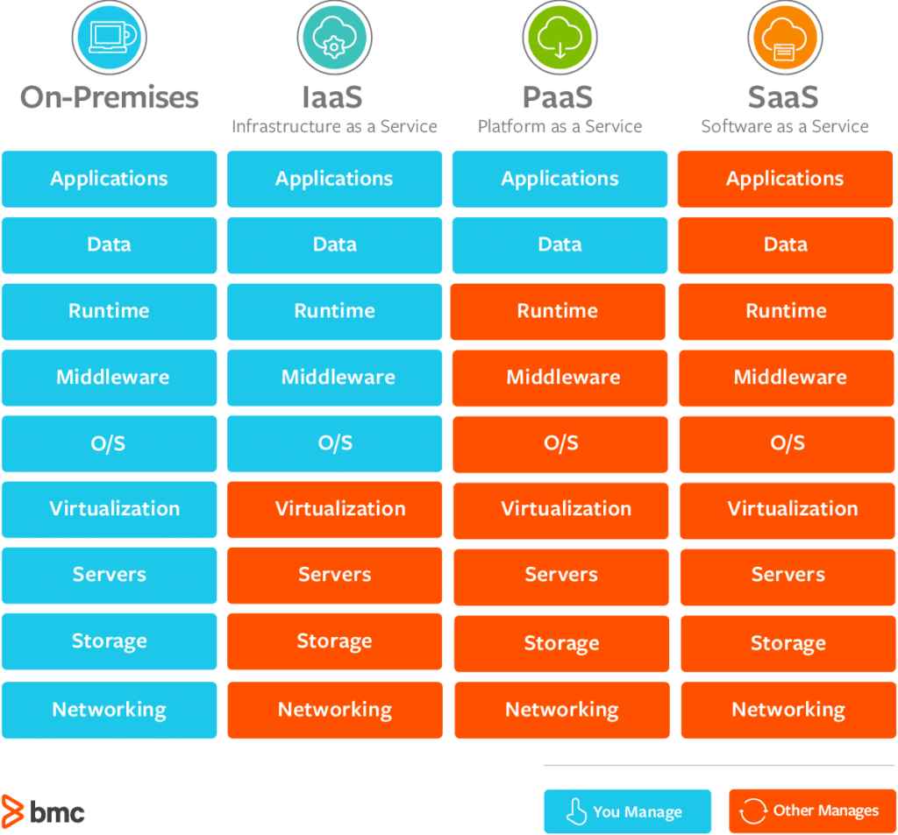

My Clouds Comprehension
Intro
In order to learn clouds, I choose AWS Web Services as the example to explore.
Cloud Computing:
- Common opinion on cloud computing is that it concerns System Administrators or DevOps Engineers because of solutions it provides on servers provsion, networking etc. In fact, It also concerns Software Developers, Security Engineers, Program Managers and so on as there are services related to computing, storage, database, analytics, encryption, deployment and more .
- Cloud computing is basically a model in which computing resources are available as a service.
- Important characteristics of cloud computing:
- On-demand and self-serviced: we can launch it at any time with no manual intervention. What that means is we can provison resources whenever needed without requireing any human's action from provider's side.
- Elasticity: we can scale it up or down at any time due to our needs. This property is strictly related to scalability that can be horizontal (adding or removing servers in a cluster) or vertical (adding or removing resources in existing server).
- Measuread: we pay as many as much resources we use. - There are 3 types of cloud computing:
- Software as a Service (Saas) - an application typically accessivle via a browser. Provider takes responsibility for upgrading, security, error handlin etc.
- Platform as a Service (PaaS) - deploying Python application on server along with all dependencies.
- Infrastructure as a Service (Iaas) - ... .
source: wp-includes.com - Cloud Architecture:
1. Clouds is actually a real Data Center with X servers already set up.
2. Data Center provides Virtualization layer (in case of AWS it's mainly XEN).
3. On top of virtualization layer there are multiple Virtual servers. - Data centers are organized into availability zones that are separated by geograpic region. They play a role of backups in case of one of the Data Centers failure.
- Each AWS region contains at least 2 availability zones.
Server Connection:
- In order to connect to a server we need to get:
- SSH Client for Linux Server,
- RDP Client for windows Server. - To get SSH client for windows on local machine I use MobaXterm.
- MAC and Linux has its own terminal with already built-in SHH client.
Features
App includes following features:
Demo
EC2
- It stands for Elastic Computing Cloud.
- It's a name for a server that we can lunch in AWS.
- When launching a new instance of EC2 on AWS we neef to configure following:
- CPU and memory size,
- Server OS,
- storage capacity,
- authentication key,
- security group.
Setup
...:
- ...